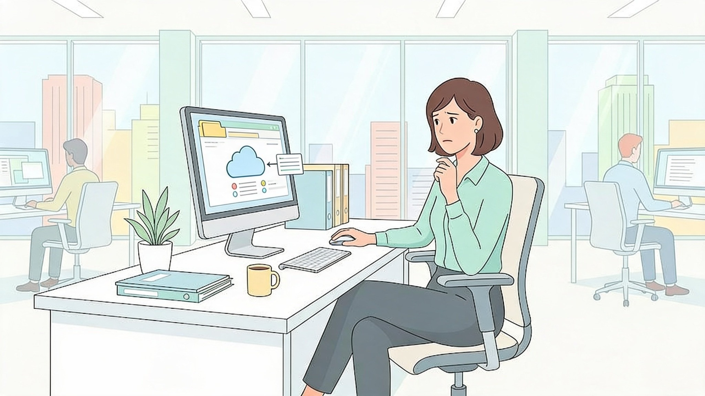

Ataques complexos normalmente são formados por várias etapas. Uma mensagem de phishing pode levar ao roubo de uma credencial, que depois permite acesso à rede e novas tentativas de comprometimento.
Por isso, um incidente aparentemente simples pode fazer parte de algo maior.
Uma sequência comum pode começar com reconhecimento do alvo e envio de uma isca. Depois, o invasor tenta obter credenciais ou executar código malicioso.
Com acesso inicial, ele pode procurar outros sistemas, contas e servidores até alcançar informações mais sensíveis.
Após obter acesso suficiente, criminosos podem copiar dados da empresa e posteriormente executar ransomware ou outras ações de impacto.
Isso mostra que roubo de informação e indisponibilidade podem fazer parte do mesmo ataque.
A vantagem de enxergar o ataque como uma sequência é perceber que ele pode ser interrompido em vários pontos.
Desconfiar de uma mensagem, utilizar MFA, limitar permissões ou comunicar rapidamente uma anomalia pode impedir que o invasor avance para a próxima etapa.
A estação de trabalho de uma pessoa pode ser a primeira porta de entrada de um ataque maior.
As decisões individuais ajudam a proteger não apenas aquele dispositivo, mas a continuidade das operações da organização.
Ataques complexos são construídos passo a passo. A prevenção também funciona passo a passo.
O que caracteriza um 'Ataque Cibernético Combinado' ou Multivetorial?
Ataques modernos combinam múltiplos vetores para contornar defesas em várias etapas.
Em uma sequência típica de ataque, qual costuma ser a PRIMEIRA etapa utilizada pelos invasores?
A fase inicial de reconhecimento e acesso (Initial Access) frequentemente usa phishing para obter a primeira credencial.
Após conseguir acesso à conta de e-mail de um único funcionário desatento, o atacante geralmente tenta:
A movimentação lateral usa a confiança da conta comprometida para infectar outros usuários da rede.
Por que um pequeno erro individual (como clicar em uma isca de phishing) pode colocar toda a empresa em risco?
A interconexão corporativa permite que uma brecha em um nó da rede se expanda para toda a infraestrutura.